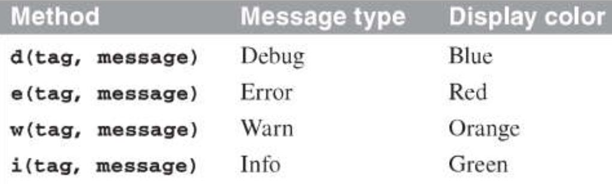
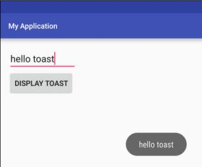

LOGCAT & TOAST
Logcat
Sử dụng LogCat để bắt lỗi trong lập trình Adroid
- Cách phổ biến nhất để theo dõi thực thi mã là sử dụng Logcat để bắt lỗi trong lập trình android.
- Sử dụng lớp Log: Log.d (“NAME”, "bill Amount: ” + bill Amount);

Toast
- Cú pháp Toast.makeText(TenActivity.this, "Content", Toast.LENGTH_SHORT).show();
- TenActivity.this: ở đây bạn sẽ nhập tên Actitivty của bạn vào nếu như bạn đang sử dụng ở Activity, nếu như bạn sử dụng ở Fragment thì điền vào đó là getActivity().
- Content: đây chính là nội dung bạn muốn show lên, ở đây là kiểu String nhé.
- Toast.LENGTH_SHORT: thời gian mà Toast hiển thị lên màn hình ở đây có 2 lựa chọn là Toast.LENGTH_LONG và Toast.LENGTH_SHORT, tương ứng với 3s và 1s.
• Hiển
thị một popup cung cấp thông tin cho người dùng
• Toast tự động biến mất sau một khoảng thời gian nhất định

Vd. Nhập vào EditText với ND sau khi nhấn Button thì sẽ hiện ra nội dung vừa nhập
• Khai báo EditText và Button trong Activity cần hiển thị.
• Viết code cho sự kiện onClick của nút nhấn để hiển thị Toast.